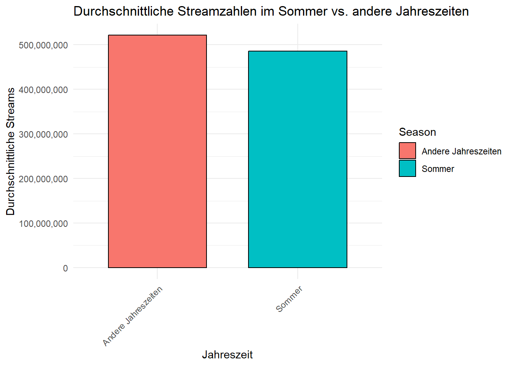
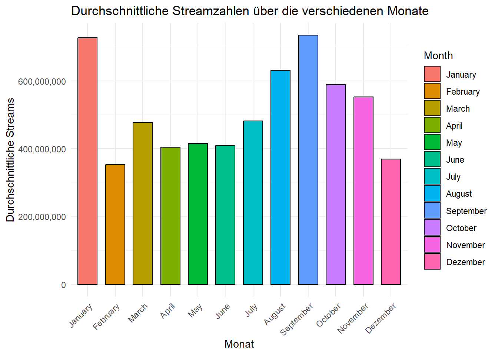
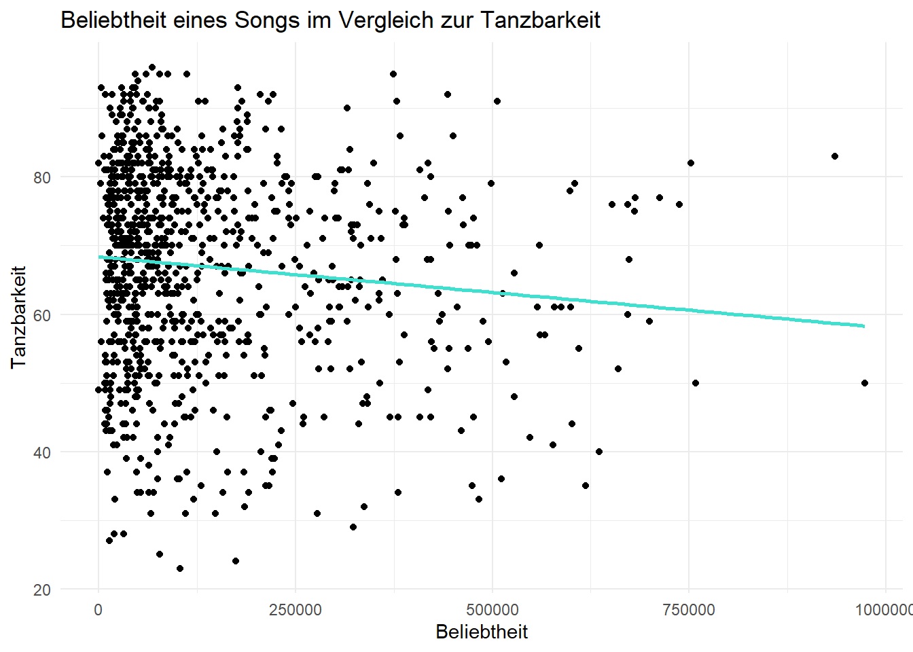

<!DOCTYPE html>
<html xmlns="http://www.w3.org/1999/xhtml" lang="de" xml:lang="de"><head>

<meta charset="utf-8">
<meta name="generator" content="quarto-1.3.433">

<meta name="viewport" content="width=device-width, initial-scale=1.0, user-scalable=yes">

<meta name="author" content="Markus Janke   Tim Beyer">

<title>Spotify Trends</title>
<style>
code{white-space: pre-wrap;}
span.smallcaps{font-variant: small-caps;}
div.columns{display: flex; gap: min(4vw, 1.5em);}
div.column{flex: auto; overflow-x: auto;}
div.hanging-indent{margin-left: 1.5em; text-indent: -1.5em;}
ul.task-list{list-style: none;}
ul.task-list li input[type="checkbox"] {
  width: 0.8em;
  margin: 0 0.8em 0.2em -1em; /* quarto-specific, see https://github.com/quarto-dev/quarto-cli/issues/4556 */ 
  vertical-align: middle;
}
/* CSS for syntax highlighting */
pre > code.sourceCode { white-space: pre; position: relative; }
pre > code.sourceCode > span { display: inline-block; line-height: 1.25; }
pre > code.sourceCode > span:empty { height: 1.2em; }
.sourceCode { overflow: visible; }
code.sourceCode > span { color: inherit; text-decoration: inherit; }
div.sourceCode { margin: 1em 0; }
pre.sourceCode { margin: 0; }
@media screen {
div.sourceCode { overflow: auto; }
}
@media print {
pre > code.sourceCode { white-space: pre-wrap; }
pre > code.sourceCode > span { text-indent: -5em; padding-left: 5em; }
}
pre.numberSource code
  { counter-reset: source-line 0; }
pre.numberSource code > span
  { position: relative; left: -4em; counter-increment: source-line; }
pre.numberSource code > span > a:first-child::before
  { content: counter(source-line);
    position: relative; left: -1em; text-align: right; vertical-align: baseline;
    border: none; display: inline-block;
    -webkit-touch-callout: none; -webkit-user-select: none;
    -khtml-user-select: none; -moz-user-select: none;
    -ms-user-select: none; user-select: none;
    padding: 0 4px; width: 4em;
  }
pre.numberSource { margin-left: 3em;  padding-left: 4px; }
div.sourceCode
  {   }
@media screen {
pre > code.sourceCode > span > a:first-child::before { text-decoration: underline; }
}
</style>


<script src="Spotify_Trends_files/libs/clipboard/clipboard.min.js"></script>
<script src="Spotify_Trends_files/libs/quarto-html/quarto.js"></script>
<script src="Spotify_Trends_files/libs/quarto-html/popper.min.js"></script>
<script src="Spotify_Trends_files/libs/quarto-html/tippy.umd.min.js"></script>
<script src="Spotify_Trends_files/libs/quarto-html/anchor.min.js"></script>
<link href="Spotify_Trends_files/libs/quarto-html/tippy.css" rel="stylesheet">
<link href="Spotify_Trends_files/libs/quarto-html/quarto-syntax-highlighting.css" rel="stylesheet" id="quarto-text-highlighting-styles">
<script src="Spotify_Trends_files/libs/bootstrap/bootstrap.min.js"></script>
<link href="Spotify_Trends_files/libs/bootstrap/bootstrap-icons.css" rel="stylesheet">
<link href="Spotify_Trends_files/libs/bootstrap/bootstrap.min.css" rel="stylesheet" id="quarto-bootstrap" data-mode="light">


</head>

<body class="fullcontent">

<div id="quarto-content" class="page-columns page-rows-contents page-layout-article">

<main class="content" id="quarto-document-content">

<header id="title-block-header" class="quarto-title-block default">
<div class="quarto-title">
<h1 class="title">Spotify Trends</h1>
</div>


<div class="quarto-title-meta">

    <div>
    <div class="quarto-title-meta-heading">Autor:in</div>
    <div class="quarto-title-meta-contents">
             <p>Markus Janke <br> Tim Beyer </p>
          </div>
  </div>
    
  
    
  </div>
  

</header>

<section id="quellenangaben" class="level1">
<h1>Quellenangaben</h1>
<p>hier Datensatzquelle einfügen</p>
</section>
<section id="vorbereitung" class="level1">
<h1>1 Vorbereitung</h1>
<section id="pakete-laden" class="level3">
<h3 class="anchored" data-anchor-id="pakete-laden">1.1 Pakete laden</h3>
<div class="cell">
<div class="sourceCode cell-code" id="cb1"><pre class="sourceCode r code-with-copy"><code class="sourceCode r"><span id="cb1-1"><a href="#cb1-1" aria-hidden="true" tabindex="-1"></a><span class="fu">library</span>(tidyverse)</span>
<span id="cb1-2"><a href="#cb1-2" aria-hidden="true" tabindex="-1"></a><span class="fu">library</span>(tidymodels)</span></code><button title="In die Zwischenablage kopieren" class="code-copy-button"><i class="bi"></i></button></pre></div>
<div class="cell-output cell-output-stderr">
<pre><code>Warning: Paket 'dials' wurde unter R Version 4.3.2 erstellt</code></pre>
</div>
<div class="sourceCode cell-code" id="cb3"><pre class="sourceCode r code-with-copy"><code class="sourceCode r"><span id="cb3-1"><a href="#cb3-1" aria-hidden="true" tabindex="-1"></a><span class="fu">library</span>(randomForest)</span></code><button title="In die Zwischenablage kopieren" class="code-copy-button"><i class="bi"></i></button></pre></div>
<div class="cell-output cell-output-stderr">
<pre><code>Warning: Paket 'randomForest' wurde unter R Version 4.3.2 erstellt</code></pre>
</div>
<div class="sourceCode cell-code" id="cb5"><pre class="sourceCode r code-with-copy"><code class="sourceCode r"><span id="cb5-1"><a href="#cb5-1" aria-hidden="true" tabindex="-1"></a><span class="fu">library</span>(rpart.plot)</span></code><button title="In die Zwischenablage kopieren" class="code-copy-button"><i class="bi"></i></button></pre></div>
<div class="cell-output cell-output-stderr">
<pre><code>Warning: Paket 'rpart.plot' wurde unter R Version 4.3.2 erstellt</code></pre>
</div>
<div class="sourceCode cell-code" id="cb7"><pre class="sourceCode r code-with-copy"><code class="sourceCode r"><span id="cb7-1"><a href="#cb7-1" aria-hidden="true" tabindex="-1"></a><span class="fu">library</span>(dials)</span>
<span id="cb7-2"><a href="#cb7-2" aria-hidden="true" tabindex="-1"></a><span class="fu">library</span>(explore)</span>
<span id="cb7-3"><a href="#cb7-3" aria-hidden="true" tabindex="-1"></a><span class="fu">library</span>(ggplot2)</span></code><button title="In die Zwischenablage kopieren" class="code-copy-button"><i class="bi"></i></button></pre></div>
</div>
</section>
<section id="arbeitsumgebung-festlegen" class="level3">
<h3 class="anchored" data-anchor-id="arbeitsumgebung-festlegen">1.2 Arbeitsumgebung festlegen</h3>
<div class="cell">
<div class="sourceCode cell-code" id="cb8"><pre class="sourceCode r code-with-copy"><code class="sourceCode r"><span id="cb8-1"><a href="#cb8-1" aria-hidden="true" tabindex="-1"></a><span class="fu">setwd</span>(<span class="st">"."</span>)  <span class="co"># Arbeitsverzeichnis setzen</span></span>
<span id="cb8-2"><a href="#cb8-2" aria-hidden="true" tabindex="-1"></a><span class="fu">getwd</span>()     <span class="co"># Arbeitsverzeichnis ausgeben</span></span></code><button title="In die Zwischenablage kopieren" class="code-copy-button"><i class="bi"></i></button></pre></div>
<div class="cell-output cell-output-stdout">
<pre><code>[1] "C:/Users/beyer/Desktop/DAML/DAML"</code></pre>
</div>
</div>
</section>
<section id="daten-einlesen" class="level3">
<h3 class="anchored" data-anchor-id="daten-einlesen">1.3 Daten einlesen</h3>
<div class="cell">
<div class="sourceCode cell-code" id="cb10"><pre class="sourceCode r code-with-copy"><code class="sourceCode r"><span id="cb10-1"><a href="#cb10-1" aria-hidden="true" tabindex="-1"></a>dataset <span class="ot">&lt;-</span> <span class="fu">read_csv</span>(<span class="st">"spotify-2023.csv"</span>)</span></code><button title="In die Zwischenablage kopieren" class="code-copy-button"><i class="bi"></i></button></pre></div>
<div class="cell-output cell-output-stderr">
<pre><code>Rows: 953 Columns: 24
── Column specification ────────────────────────────────────────────────────────
Delimiter: ","
chr  (5): track_name, artist(s)_name, streams, key, mode
dbl (17): artist_count, released_year, released_month, released_day, in_spot...
num  (2): in_deezer_playlists, in_shazam_charts

ℹ Use `spec()` to retrieve the full column specification for this data.
ℹ Specify the column types or set `show_col_types = FALSE` to quiet this message.</code></pre>
</div>
</div>
</section>
</section>
<section id="überblick-über-die-daten" class="level1">
<h1>2 Überblick über die Daten</h1>
<section id="dimensionen-des-datensatzes" class="level3">
<h3 class="anchored" data-anchor-id="dimensionen-des-datensatzes">2.1 Dimensionen des Datensatzes</h3>
<div class="cell">
<div class="sourceCode cell-code" id="cb12"><pre class="sourceCode r code-with-copy"><code class="sourceCode r"><span id="cb12-1"><a href="#cb12-1" aria-hidden="true" tabindex="-1"></a><span class="fu">dim</span>(dataset)</span></code><button title="In die Zwischenablage kopieren" class="code-copy-button"><i class="bi"></i></button></pre></div>
<div class="cell-output cell-output-stdout">
<pre><code>[1] 953  24</code></pre>
</div>
</div>
</section>
<section id="struktur-des-datensatzes" class="level3">
<h3 class="anchored" data-anchor-id="struktur-des-datensatzes">2.2 Struktur des Datensatzes</h3>
<div class="cell">
<div class="sourceCode cell-code" id="cb14"><pre class="sourceCode r code-with-copy"><code class="sourceCode r"><span id="cb14-1"><a href="#cb14-1" aria-hidden="true" tabindex="-1"></a><span class="fu">describe_tbl</span>(dataset)</span></code><button title="In die Zwischenablage kopieren" class="code-copy-button"><i class="bi"></i></button></pre></div>
<div class="cell-output cell-output-stdout">
<pre><code>953 observations with 24 variables
136 observations containing missings (NA)
2 variables containing missings (NA)
0 variables with no variance</code></pre>
</div>
</div>
</section>
<section id="spaltennamen-des-datensatzes" class="level3">
<h3 class="anchored" data-anchor-id="spaltennamen-des-datensatzes">2.3 Spaltennamen des Datensatzes</h3>
<div class="cell">
<div class="sourceCode cell-code" id="cb16"><pre class="sourceCode r code-with-copy"><code class="sourceCode r"><span id="cb16-1"><a href="#cb16-1" aria-hidden="true" tabindex="-1"></a><span class="fu">colnames</span>(dataset)</span></code><button title="In die Zwischenablage kopieren" class="code-copy-button"><i class="bi"></i></button></pre></div>
<div class="cell-output cell-output-stdout">
<pre><code> [1] "track_name"           "artist(s)_name"       "artist_count"        
 [4] "released_year"        "released_month"       "released_day"        
 [7] "in_spotify_playlists" "in_spotify_charts"    "streams"             
[10] "in_apple_playlists"   "in_apple_charts"      "in_deezer_playlists" 
[13] "in_deezer_charts"     "in_shazam_charts"     "bpm"                 
[16] "key"                  "mode"                 "danceability_%"      
[19] "valence_%"            "energy_%"             "acousticness_%"      
[22] "instrumentalness_%"   "liveness_%"           "speechiness_%"       </code></pre>
</div>
</div>
</section>
<section id="zusammenfassung-für-jede-spalte-anzeigen" class="level3">
<h3 class="anchored" data-anchor-id="zusammenfassung-für-jede-spalte-anzeigen">2.4 Zusammenfassung für jede Spalte anzeigen</h3>
<div class="cell">
<div class="sourceCode cell-code" id="cb18"><pre class="sourceCode r code-with-copy"><code class="sourceCode r"><span id="cb18-1"><a href="#cb18-1" aria-hidden="true" tabindex="-1"></a><span class="fu">summary</span>(dataset)</span></code><button title="In die Zwischenablage kopieren" class="code-copy-button"><i class="bi"></i></button></pre></div>
<div class="cell-output cell-output-stdout">
<pre><code>  track_name        artist(s)_name      artist_count   released_year 
 Length:953         Length:953         Min.   :1.000   Min.   :1930  
 Class :character   Class :character   1st Qu.:1.000   1st Qu.:2020  
 Mode  :character   Mode  :character   Median :1.000   Median :2022  
                                       Mean   :1.556   Mean   :2018  
                                       3rd Qu.:2.000   3rd Qu.:2022  
                                       Max.   :8.000   Max.   :2023  
                                                                     
 released_month    released_day   in_spotify_playlists in_spotify_charts
 Min.   : 1.000   Min.   : 1.00   Min.   :   31        Min.   :  0.00   
 1st Qu.: 3.000   1st Qu.: 6.00   1st Qu.:  875        1st Qu.:  0.00   
 Median : 6.000   Median :13.00   Median : 2224        Median :  3.00   
 Mean   : 6.034   Mean   :13.93   Mean   : 5200        Mean   : 12.01   
 3rd Qu.: 9.000   3rd Qu.:22.00   3rd Qu.: 5542        3rd Qu.: 16.00   
 Max.   :12.000   Max.   :31.00   Max.   :52898        Max.   :147.00   
                                                                        
   streams          in_apple_playlists in_apple_charts  in_deezer_playlists
 Length:953         Min.   :  0.00     Min.   :  0.00   Min.   :    0.0    
 Class :character   1st Qu.: 13.00     1st Qu.:  7.00   1st Qu.:   13.0    
 Mode  :character   Median : 34.00     Median : 38.00   Median :   44.0    
                    Mean   : 67.81     Mean   : 51.91   Mean   :  385.2    
                    3rd Qu.: 88.00     3rd Qu.: 87.00   3rd Qu.:  164.0    
                    Max.   :672.00     Max.   :275.00   Max.   :12367.0    
                                                                           
 in_deezer_charts in_shazam_charts      bpm            key           
 Min.   : 0.000   Min.   :   0     Min.   : 65.0   Length:953        
 1st Qu.: 0.000   1st Qu.:   0     1st Qu.:100.0   Class :character  
 Median : 0.000   Median :   2     Median :121.0   Mode  :character  
 Mean   : 2.666   Mean   :  60     Mean   :122.5                     
 3rd Qu.: 2.000   3rd Qu.:  37     3rd Qu.:140.0                     
 Max.   :58.000   Max.   :1451     Max.   :206.0                     
                  NA's   :50                                         
     mode           danceability_%    valence_%        energy_%    
 Length:953         Min.   :23.00   Min.   : 4.00   Min.   : 9.00  
 Class :character   1st Qu.:57.00   1st Qu.:32.00   1st Qu.:53.00  
 Mode  :character   Median :69.00   Median :51.00   Median :66.00  
                    Mean   :66.97   Mean   :51.43   Mean   :64.28  
                    3rd Qu.:78.00   3rd Qu.:70.00   3rd Qu.:77.00  
                    Max.   :96.00   Max.   :97.00   Max.   :97.00  
                                                                   
 acousticness_%  instrumentalness_%   liveness_%    speechiness_%  
 Min.   : 0.00   Min.   : 0.000     Min.   : 3.00   Min.   : 2.00  
 1st Qu.: 6.00   1st Qu.: 0.000     1st Qu.:10.00   1st Qu.: 4.00  
 Median :18.00   Median : 0.000     Median :12.00   Median : 6.00  
 Mean   :27.06   Mean   : 1.581     Mean   :18.21   Mean   :10.13  
 3rd Qu.:43.00   3rd Qu.: 0.000     3rd Qu.:24.00   3rd Qu.:11.00  
 Max.   :97.00   Max.   :91.000     Max.   :97.00   Max.   :64.00  
                                                                   </code></pre>
</div>
</div>
</section>
</section>
<section id="bereinigung-der-daten" class="level1">
<h1>3 Bereinigung der Daten</h1>
<section id="bearbeiten-der-spalte-streams-sodass-diese-als-numerischer-wert-interpretiert-wird" class="level3">
<h3 class="anchored" data-anchor-id="bearbeiten-der-spalte-streams-sodass-diese-als-numerischer-wert-interpretiert-wird">3.1 Bearbeiten der Spalte streams, sodass diese als numerischer Wert interpretiert wird</h3>
<p>Die Zusammenfassung der Spalten zeigt, dass “streams” als character erkannt wurde, da dieser Wert jedoch numerisch ist sollte dieser auch als solcher interpretiert werden.</p>
<div class="cell">
<div class="sourceCode cell-code" id="cb20"><pre class="sourceCode r code-with-copy"><code class="sourceCode r"><span id="cb20-1"><a href="#cb20-1" aria-hidden="true" tabindex="-1"></a>dataset<span class="sc">$</span>streams <span class="ot">&lt;-</span> <span class="fu">as.numeric</span>(dataset<span class="sc">$</span>streams)</span></code><button title="In die Zwischenablage kopieren" class="code-copy-button"><i class="bi"></i></button></pre></div>
<div class="cell-output cell-output-stderr">
<pre><code>Warning: NAs durch Umwandlung erzeugt</code></pre>
</div>
</div>
</section>
<section id="löschen-des-datensatzes-ohne-eintrag-in-streams" class="level3">
<h3 class="anchored" data-anchor-id="löschen-des-datensatzes-ohne-eintrag-in-streams">3.2 Löschen des Datensatzes ohne eintrag in streams</h3>
<p>Durch die Umwandlung von character zu numeric wurden NAs erzeugt, dieser Datensatz wird gelöscht, da Streams die für die genaue Betrachtung relevanteste Spalte ist und ohne diese Spalte keine qualitativen Aussagen getroffen werden können. Des Weiteren betrifft dies nur einen Wert, wodurch die Datenmenge nicht signifikant verkleinert wird.</p>
<div class="cell">
<div class="sourceCode cell-code" id="cb22"><pre class="sourceCode r code-with-copy"><code class="sourceCode r"><span id="cb22-1"><a href="#cb22-1" aria-hidden="true" tabindex="-1"></a>dataset <span class="ot">&lt;-</span> dataset[<span class="sc">!</span><span class="fu">is.na</span>(dataset<span class="sc">$</span>streams), ]</span></code><button title="In die Zwischenablage kopieren" class="code-copy-button"><i class="bi"></i></button></pre></div>
</div>
</section>
<section id="löschen-der-spalte-in_shazam_charts" class="level3">
<h3 class="anchored" data-anchor-id="löschen-der-spalte-in_shazam_charts">3.3 Löschen der Spalte in_shazam_charts</h3>
<p>Darüber hinaus sind in der Spalte “in_shazam_charts” einige NAs enthalten. Dies kann darauf zurückzuführen sein, dass die entsprechenden Songs nicht auf Shazam verfügbar sind oder dass Shazam nicht die Rechte für das Abspielen des Songs hat. Da Shazam insgesamt ein nicht sehr beliebter Musikstreamingsienst ist, wird diese Spalte entfernt, da sie für die weitere Betrachtung nicht relevant ist.</p>
<div class="cell">
<div class="sourceCode cell-code" id="cb23"><pre class="sourceCode r code-with-copy"><code class="sourceCode r"><span id="cb23-1"><a href="#cb23-1" aria-hidden="true" tabindex="-1"></a>dataset<span class="sc">$</span>in_shazam_charts <span class="ot">&lt;-</span> <span class="cn">NULL</span></span></code><button title="In die Zwischenablage kopieren" class="code-copy-button"><i class="bi"></i></button></pre></div>
</div>
</section>
<section id="löschen-der-spalte-key" class="level3">
<h3 class="anchored" data-anchor-id="löschen-der-spalte-key">3.4 Löschen der Spalte key:</h3>
<p>In der Spalte “key” sind etwa 10% der Werte NAs. Da diese Spalte dadurch nicht aussagekräftig ist, wird diese ebenfalls entfernt.</p>
<div class="cell">
<div class="sourceCode cell-code" id="cb24"><pre class="sourceCode r code-with-copy"><code class="sourceCode r"><span id="cb24-1"><a href="#cb24-1" aria-hidden="true" tabindex="-1"></a>dataset<span class="sc">$</span>key <span class="ot">&lt;-</span> <span class="cn">NULL</span></span></code><button title="In die Zwischenablage kopieren" class="code-copy-button"><i class="bi"></i></button></pre></div>
</div>
</section>
<section id="umbennen-der-spalten-die-ein-enthalten" class="level3">
<h3 class="anchored" data-anchor-id="umbennen-der-spalten-die-ein-enthalten">3.5 Umbennen der Spalten, die ein “%” enthalten</h3>
<p>Die Spalten “danceability”, “energy”, “speechiness”, “acousticness”, “instrumentalness”, “liveness”und “valence” enthalten ein “%”. Dies kann zu Problemen bei der weiteren Verarbeitung führen, weshalb diese Spalten umbenannt werden.</p>
<div class="cell">
<div class="sourceCode cell-code" id="cb25"><pre class="sourceCode r code-with-copy"><code class="sourceCode r"><span id="cb25-1"><a href="#cb25-1" aria-hidden="true" tabindex="-1"></a><span class="fu">colnames</span>(dataset)[<span class="fu">colnames</span>(dataset) <span class="sc">==</span> <span class="st">"danceability_%"</span>] <span class="ot">&lt;-</span> <span class="st">"danceability_percent"</span></span>
<span id="cb25-2"><a href="#cb25-2" aria-hidden="true" tabindex="-1"></a><span class="fu">colnames</span>(dataset)[<span class="fu">colnames</span>(dataset) <span class="sc">==</span> <span class="st">"energy_%"</span>] <span class="ot">&lt;-</span> <span class="st">"energy_percent"</span></span>
<span id="cb25-3"><a href="#cb25-3" aria-hidden="true" tabindex="-1"></a><span class="fu">colnames</span>(dataset)[<span class="fu">colnames</span>(dataset) <span class="sc">==</span> <span class="st">"speechiness_%"</span>] <span class="ot">&lt;-</span> <span class="st">"speechiness_percent"</span></span>
<span id="cb25-4"><a href="#cb25-4" aria-hidden="true" tabindex="-1"></a><span class="fu">colnames</span>(dataset)[<span class="fu">colnames</span>(dataset) <span class="sc">==</span> <span class="st">"acousticness_%"</span>] <span class="ot">&lt;-</span> <span class="st">"acousticness_percent"</span></span>
<span id="cb25-5"><a href="#cb25-5" aria-hidden="true" tabindex="-1"></a><span class="fu">colnames</span>(dataset)[<span class="fu">colnames</span>(dataset) <span class="sc">==</span> <span class="st">"instrumentalness_%"</span>] <span class="ot">&lt;-</span> <span class="st">"instrumentalness_percent"</span></span>
<span id="cb25-6"><a href="#cb25-6" aria-hidden="true" tabindex="-1"></a><span class="fu">colnames</span>(dataset)[<span class="fu">colnames</span>(dataset) <span class="sc">==</span> <span class="st">"liveness_%"</span>] <span class="ot">&lt;-</span> <span class="st">"liveness_percent"</span></span>
<span id="cb25-7"><a href="#cb25-7" aria-hidden="true" tabindex="-1"></a><span class="fu">colnames</span>(dataset)[<span class="fu">colnames</span>(dataset) <span class="sc">==</span> <span class="st">"valence_%"</span>] <span class="ot">&lt;-</span> <span class="st">"valence_percent"</span></span></code><button title="In die Zwischenablage kopieren" class="code-copy-button"><i class="bi"></i></button></pre></div>
</div>
</section>
<section id="zusammenfassung-des-bereinigten-datensatzes" class="level3">
<h3 class="anchored" data-anchor-id="zusammenfassung-des-bereinigten-datensatzes">3.6 Zusammenfassung des bereinigten Datensatzes</h3>
<div class="cell">
<div class="sourceCode cell-code" id="cb26"><pre class="sourceCode r code-with-copy"><code class="sourceCode r"><span id="cb26-1"><a href="#cb26-1" aria-hidden="true" tabindex="-1"></a><span class="fu">summary</span>(dataset)</span></code><button title="In die Zwischenablage kopieren" class="code-copy-button"><i class="bi"></i></button></pre></div>
<div class="cell-output cell-output-stdout">
<pre><code>  track_name        artist(s)_name      artist_count   released_year 
 Length:952         Length:952         Min.   :1.000   Min.   :1930  
 Class :character   Class :character   1st Qu.:1.000   1st Qu.:2020  
 Mode  :character   Mode  :character   Median :1.000   Median :2022  
                                       Mean   :1.557   Mean   :2018  
                                       3rd Qu.:2.000   3rd Qu.:2022  
                                       Max.   :8.000   Max.   :2023  
 released_month    released_day   in_spotify_playlists in_spotify_charts
 Min.   : 1.000   Min.   : 1.00   Min.   :   31.0      Min.   :  0.00   
 1st Qu.: 3.000   1st Qu.: 6.00   1st Qu.:  874.5      1st Qu.:  0.00   
 Median : 6.000   Median :13.00   Median : 2216.5      Median :  3.00   
 Mean   : 6.039   Mean   :13.94   Mean   : 5202.6      Mean   : 12.02   
 3rd Qu.: 9.000   3rd Qu.:22.00   3rd Qu.: 5573.8      3rd Qu.: 16.00   
 Max.   :12.000   Max.   :31.00   Max.   :52898.0      Max.   :147.00   
    streams          in_apple_playlists in_apple_charts  in_deezer_playlists
 Min.   :2.762e+03   Min.   :  0.00     Min.   :  0.00   Min.   :    0.0    
 1st Qu.:1.416e+08   1st Qu.: 13.00     1st Qu.:  7.00   1st Qu.:   13.0    
 Median :2.905e+08   Median : 34.00     Median : 38.50   Median :   44.0    
 Mean   :5.141e+08   Mean   : 67.87     Mean   : 51.96   Mean   :  385.5    
 3rd Qu.:6.739e+08   3rd Qu.: 88.00     3rd Qu.: 87.00   3rd Qu.:  164.2    
 Max.   :3.704e+09   Max.   :672.00     Max.   :275.00   Max.   :12367.0    
 in_deezer_charts      bpm             mode           danceability_percent
 Min.   : 0.000   Min.   : 65.00   Length:952         Min.   :23.00       
 1st Qu.: 0.000   1st Qu.: 99.75   Class :character   1st Qu.:57.00       
 Median : 0.000   Median :121.00   Mode  :character   Median :69.00       
 Mean   : 2.669   Mean   :122.55                      Mean   :66.98       
 3rd Qu.: 2.000   3rd Qu.:140.25                      3rd Qu.:78.00       
 Max.   :58.000   Max.   :206.00                      Max.   :96.00       
 valence_percent energy_percent  acousticness_percent instrumentalness_percent
 Min.   : 4.00   Min.   : 9.00   Min.   : 0.00        Min.   : 0.000          
 1st Qu.:32.00   1st Qu.:53.00   1st Qu.: 6.00        1st Qu.: 0.000          
 Median :51.00   Median :66.00   Median :18.00        Median : 0.000          
 Mean   :51.41   Mean   :64.27   Mean   :27.08        Mean   : 1.583          
 3rd Qu.:70.00   3rd Qu.:77.00   3rd Qu.:43.00        3rd Qu.: 0.000          
 Max.   :97.00   Max.   :97.00   Max.   :97.00        Max.   :91.000          
 liveness_percent speechiness_percent
 Min.   : 3.00    Min.   : 2.00      
 1st Qu.:10.00    1st Qu.: 4.00      
 Median :12.00    Median : 6.00      
 Mean   :18.21    Mean   :10.14      
 3rd Qu.:24.00    3rd Qu.:11.00      
 Max.   :97.00    Max.   :64.00      </code></pre>
</div>
</div>
</section>
</section>
<section id="beliebtheitsscore-berechnen" class="level1">
<h1>4 Beliebtheitsscore berechnen</h1>
<p>Um die Beliebheit der Songs über mehrere Werte beurteilen zu können, wird ein Beliebheitsscore berechnet. Dieser setzt sich aus den Streams und den Charts der verschiedenen Streamingdienste zusammen.</p>
<section id="gewichtungen" class="level3">
<h3 class="anchored" data-anchor-id="gewichtungen">4.1 Gewichtungen</h3>
<p>Die Gewichtung der einzelnen Werte, die in die Bewertung des Beliebtheitsscores einfließen, ergibt sich aus der Beliebtheit der verschiedenen Streamingdienste. Spotify ist der größte Streamingdienst und wird deshalb am stärksten gewichtet. Die anderen Streamingdienste werden entsprechend ihrer Beliebtheit gewichtet. Apple Music ist nach Spotify einer der beliebtesten Streamingdienste und wird deshalb am zweitstärksten gewichtet. Deezer ist in Untersuchungen sehr weit hinter Spotify und Apple, was in der Gewichtung deutlich wird. Orientiert wurde sich hierbei an der Studie von Statista, welche Musikstreamingdienste weltweit am häufigsten genutzt werden. (https://www.statista.com/chart/20826/music-streaming-services-with-most-subscribers-global-fipp/) In der Statistik sind mehr Streamingdienste zu sehen als hier untersucht werden, dies liegt daran, dass diese nicht erfasst wurden oder, dass kein Zugriff auf die Daten besteht und diese somit nicht aufgenommen werden konnten. Genauer wird darauf noch im Ausblick und in den Grenzen des Projekts eingegangen.</p>
<div class="cell">
<div class="sourceCode cell-code" id="cb28"><pre class="sourceCode r code-with-copy"><code class="sourceCode r"><span id="cb28-1"><a href="#cb28-1" aria-hidden="true" tabindex="-1"></a>w_streams <span class="ot">&lt;-</span> <span class="dv">1</span></span>
<span id="cb28-2"><a href="#cb28-2" aria-hidden="true" tabindex="-1"></a>w_spotify_charts <span class="ot">&lt;-</span> <span class="sc">-</span><span class="dv">2</span>  </span>
<span id="cb28-3"><a href="#cb28-3" aria-hidden="true" tabindex="-1"></a>w_deezer_charts <span class="ot">&lt;-</span> <span class="sc">-</span><span class="fl">1.5</span></span>
<span id="cb28-4"><a href="#cb28-4" aria-hidden="true" tabindex="-1"></a>w_apple_charts <span class="ot">&lt;-</span> <span class="sc">-</span><span class="fl">1.3</span></span></code><button title="In die Zwischenablage kopieren" class="code-copy-button"><i class="bi"></i></button></pre></div>
</div>
</section>
<section id="berechnung-des-beliebheitsscores" class="level3">
<h3 class="anchored" data-anchor-id="berechnung-des-beliebheitsscores">4.2 Berechnung des Beliebheitsscores</h3>
<p>Bie der Berechnung des Beliebtheitssscores wird zunächst der ursprüngliche Wert der einzelnen Spalten mit der entsprechenden Gewichtung multipliziert. Anschließend werden die einzelnen Werte addiert und durch die Anzahl der Spalten geteilt, um den Durchschnitt zu erhalten.</p>
<div class="cell">
<div class="sourceCode cell-code" id="cb29"><pre class="sourceCode r code-with-copy"><code class="sourceCode r"><span id="cb29-1"><a href="#cb29-1" aria-hidden="true" tabindex="-1"></a>dataset<span class="sc">$</span>popularity_score <span class="ot">&lt;-</span> (</span>
<span id="cb29-2"><a href="#cb29-2" aria-hidden="true" tabindex="-1"></a>  w_streams <span class="sc">*</span> dataset<span class="sc">$</span>streams <span class="sc">+</span></span>
<span id="cb29-3"><a href="#cb29-3" aria-hidden="true" tabindex="-1"></a>  w_spotify_charts <span class="sc">*</span> dataset<span class="sc">$</span>in_spotify_charts <span class="sc">+</span></span>
<span id="cb29-4"><a href="#cb29-4" aria-hidden="true" tabindex="-1"></a>  w_deezer_charts <span class="sc">*</span> dataset<span class="sc">$</span>in_deezer_charts <span class="sc">+</span></span>
<span id="cb29-5"><a href="#cb29-5" aria-hidden="true" tabindex="-1"></a>  w_apple_charts <span class="sc">*</span> dataset<span class="sc">$</span>in_apple_charts</span>
<span id="cb29-6"><a href="#cb29-6" aria-hidden="true" tabindex="-1"></a>) <span class="sc">/</span> <span class="fu">sum</span>(<span class="sc">!</span><span class="fu">is.na</span>(dataset[, <span class="fu">c</span>(<span class="st">"streams"</span>, <span class="st">"in_spotify_charts"</span>, <span class="st">"in_deezer_charts"</span>, <span class="st">"in_apple_charts"</span>)]))</span></code><button title="In die Zwischenablage kopieren" class="code-copy-button"><i class="bi"></i></button></pre></div>
</div>
</section>
</section>
<section id="thesen" class="level1">
<h1>5 Thesen</h1>
<section id="die-veröffentlichung-im-sommer-führt-zu-höheren-streamzahlen-tim" class="level3">
<h3 class="anchored" data-anchor-id="die-veröffentlichung-im-sommer-führt-zu-höheren-streamzahlen-tim">5.1 Die Veröffentlichung im Sommer führt zu höheren Streamzahlen (Tim)</h3>
<p>Die These stellt die Vermutung auf, dass die Veröffentlichung im Sommer zu höheren Streamzahlen führt. Dies könnte daran leigen, dass im Sommer veröffentlichte Songs oft ein Sommerhit werden könnten und somit häufiger gestreamt werden. Außerdem vermitteln Songs die im Sommer veröffentlicht werden, häufig ein sommerliches Gefühl, wodurch diese Songs auch ganzjährig häufiger gestreamt werden.</p>
<p>Um diese These zu überprüfen, wird zunächst der Durchschnitt der Streams im Sommer berechnet. Anschließend wird der Durchschnitt der Streams in anderen Jahreszeiten berechnet. Diese beiden Werte werden anschließend miteinander verglichen und in einem Balkendiagramm graphisch gegenüber gestellt.</p>
<section id="durchschnittliche-streams-im-sommer" class="level4">
<h4 class="anchored" data-anchor-id="durchschnittliche-streams-im-sommer">5.1.1 Durchschnittliche Streams im Sommer</h4>
<div class="cell">
<div class="sourceCode cell-code" id="cb30"><pre class="sourceCode r code-with-copy"><code class="sourceCode r"><span id="cb30-1"><a href="#cb30-1" aria-hidden="true" tabindex="-1"></a>mean_streams_summer <span class="ot">&lt;-</span> <span class="fu">mean</span>(dataset<span class="sc">$</span>streams[dataset<span class="sc">$</span>released_month <span class="sc">%in%</span> <span class="fu">c</span>(<span class="dv">6</span>, <span class="dv">7</span>, <span class="dv">8</span>)])</span></code><button title="In die Zwischenablage kopieren" class="code-copy-button"><i class="bi"></i></button></pre></div>
</div>
</section>
<section id="durchschnittliche-streams-im-sommer-1" class="level4">
<h4 class="anchored" data-anchor-id="durchschnittliche-streams-im-sommer-1">5.1.2 Durchschnittliche Streams im Sommer</h4>
<div class="cell">
<div class="sourceCode cell-code" id="cb31"><pre class="sourceCode r code-with-copy"><code class="sourceCode r"><span id="cb31-1"><a href="#cb31-1" aria-hidden="true" tabindex="-1"></a>mean_streams_other_seasons <span class="ot">&lt;-</span> <span class="fu">mean</span>(dataset<span class="sc">$</span>streams[dataset<span class="sc">$</span>released_month <span class="sc">%in%</span> <span class="fu">c</span>(<span class="dv">1</span>, <span class="dv">2</span>, <span class="dv">3</span>, <span class="dv">4</span>, <span class="dv">5</span>, <span class="dv">9</span>, <span class="dv">10</span>, <span class="dv">11</span>, <span class="dv">12</span>)])</span></code><button title="In die Zwischenablage kopieren" class="code-copy-button"><i class="bi"></i></button></pre></div>
</div>
</section>
<section id="vergleich-der-beiden-werte" class="level4">
<h4 class="anchored" data-anchor-id="vergleich-der-beiden-werte">5.1.3 Vergleich der beiden Werte</h4>
<div class="cell">
<div class="sourceCode cell-code" id="cb32"><pre class="sourceCode r code-with-copy"><code class="sourceCode r"><span id="cb32-1"><a href="#cb32-1" aria-hidden="true" tabindex="-1"></a>mean_streams_summer <span class="sc">/</span> mean_streams_other_seasons</span></code><button title="In die Zwischenablage kopieren" class="code-copy-button"><i class="bi"></i></button></pre></div>
<div class="cell-output cell-output-stdout">
<pre><code>[1] 0.9311501</code></pre>
</div>
</div>
<p>Aus diesem Wert lässt sich erkenne, dass die Stream im Sommer im Durchschnitt unter den Streams in anderen Jahreszeiten liegen. Dies spricht gegen die These, dass die Veröffentlichung im Sommer zu höheren Streamzahlen führt. Deshlab schauen wir uns die Werte im folgenden genauer an.</p>
<div class="cell">
<div class="sourceCode cell-code" id="cb34"><pre class="sourceCode r code-with-copy"><code class="sourceCode r"><span id="cb34-1"><a href="#cb34-1" aria-hidden="true" tabindex="-1"></a>mean_streams_summer</span></code><button title="In die Zwischenablage kopieren" class="code-copy-button"><i class="bi"></i></button></pre></div>
<div class="cell-output cell-output-stdout">
<pre><code>[1] 485551575</code></pre>
</div>
<div class="sourceCode cell-code" id="cb36"><pre class="sourceCode r code-with-copy"><code class="sourceCode r"><span id="cb36-1"><a href="#cb36-1" aria-hidden="true" tabindex="-1"></a>mean_streams_other_seasons</span></code><button title="In die Zwischenablage kopieren" class="code-copy-button"><i class="bi"></i></button></pre></div>
<div class="cell-output cell-output-stdout">
<pre><code>[1] 521453592</code></pre>
</div>
</div>
<p>Die Werte der anderen Jahreszeiten sind etwa 50.000 Streams höher als die Werte der im Sommer veröffentlichten Songs.Um den Unterschied einmal graphisch darzustellen, wird ein Balkendiagramm erstellt.</p>
</section>
<section id="daten-für-das-balkendiagramm-vorbereiten" class="level4">
<h4 class="anchored" data-anchor-id="daten-für-das-balkendiagramm-vorbereiten">5.1.5 Daten für das Balkendiagramm vorbereiten</h4>
<div class="cell">
<div class="sourceCode cell-code" id="cb38"><pre class="sourceCode r code-with-copy"><code class="sourceCode r"><span id="cb38-1"><a href="#cb38-1" aria-hidden="true" tabindex="-1"></a>bar_data <span class="ot">&lt;-</span> <span class="fu">data.frame</span>(</span>
<span id="cb38-2"><a href="#cb38-2" aria-hidden="true" tabindex="-1"></a>  <span class="at">Season =</span> <span class="fu">c</span>(<span class="st">"Sommer"</span>, <span class="st">"Andere Jahreszeiten"</span>),</span>
<span id="cb38-3"><a href="#cb38-3" aria-hidden="true" tabindex="-1"></a>  <span class="at">Mean_Streams =</span> <span class="fu">c</span>(mean_streams_summer, mean_streams_other_seasons)</span>
<span id="cb38-4"><a href="#cb38-4" aria-hidden="true" tabindex="-1"></a>)</span></code><button title="In die Zwischenablage kopieren" class="code-copy-button"><i class="bi"></i></button></pre></div>
</div>
</section>
<section id="balkendiagramm-über-die-durchschnittlichen-streams-im-sommer-vs.-andere-jahreszeiten-erstellen" class="level4">
<h4 class="anchored" data-anchor-id="balkendiagramm-über-die-durchschnittlichen-streams-im-sommer-vs.-andere-jahreszeiten-erstellen">5.1.6 Balkendiagramm über die durchschnittlichen Streams im Sommer vs.&nbsp;andere Jahreszeiten erstellen</h4>
<div class="cell">
<div class="sourceCode cell-code" id="cb39"><pre class="sourceCode r code-with-copy"><code class="sourceCode r"><span id="cb39-1"><a href="#cb39-1" aria-hidden="true" tabindex="-1"></a><span class="fu">ggplot</span>(bar_data, <span class="fu">aes</span>(<span class="at">x =</span> Season, <span class="at">y =</span> Mean_Streams, <span class="at">fill =</span> Season)) <span class="sc">+</span></span>
<span id="cb39-2"><a href="#cb39-2" aria-hidden="true" tabindex="-1"></a>  <span class="fu">geom_bar</span>(<span class="at">stat =</span> <span class="st">"identity"</span>, <span class="at">position =</span> <span class="st">"dodge"</span>, <span class="at">width =</span> <span class="fl">0.7</span>, <span class="at">color =</span> <span class="st">"black"</span>) <span class="sc">+</span></span>
<span id="cb39-3"><a href="#cb39-3" aria-hidden="true" tabindex="-1"></a>  <span class="fu">labs</span>(<span class="at">title =</span> <span class="st">"Durchschnittliche Streamzahlen im Sommer vs. andere Jahreszeiten"</span>,</span>
<span id="cb39-4"><a href="#cb39-4" aria-hidden="true" tabindex="-1"></a>       <span class="at">x =</span> <span class="st">"Jahreszeit"</span>,</span>
<span id="cb39-5"><a href="#cb39-5" aria-hidden="true" tabindex="-1"></a>       <span class="at">y =</span> <span class="st">"Durchschnittliche Streams"</span>) <span class="sc">+</span></span>
<span id="cb39-6"><a href="#cb39-6" aria-hidden="true" tabindex="-1"></a>  <span class="fu">theme_minimal</span>()<span class="sc">+</span></span>
<span id="cb39-7"><a href="#cb39-7" aria-hidden="true" tabindex="-1"></a>  <span class="fu">theme</span>(<span class="at">axis.text.x =</span> <span class="fu">element_text</span>(<span class="at">angle =</span> <span class="dv">45</span>, <span class="at">hjust =</span> <span class="dv">1</span>)) <span class="sc">+</span></span>
<span id="cb39-8"><a href="#cb39-8" aria-hidden="true" tabindex="-1"></a>  <span class="fu">scale_y_continuous</span>(<span class="at">labels =</span> scales<span class="sc">::</span>comma)</span></code><button title="In die Zwischenablage kopieren" class="code-copy-button"><i class="bi"></i></button></pre></div>
<div class="cell-output-display">
<p></p>
</div>
</div>
<p>Im Balkendiagramm lässt sich erkennen, dass die Stream im Sommer im Durchschnitt unter den Streams in anderen Jahreszeiten liegen. Dies spricht wie oben erwähnt gegen die aufgestellte These. Jedoch ist zu bemerken, dass der Unterschied nicht sehr groß ist. Die Streamzahlen im Sommer sind nur etwa 50.000 Streams niedriger als die Streamzahlen in anderen Jahreszeiten. Dies ist ein Unterschied von etwa 1,5%. Dieser Unterschied ist nicht sehr groß und könnte auch durch Zufall entstanden sein. Deshalb wird im folgenden noch einmal genauer auf die Streamzahlen in den einzelnen Monaten geschaut.</p>
</section>
<section id="durschschnittliche-streams-über-die-verschiedenen-monate-berechnen" class="level4">
<h4 class="anchored" data-anchor-id="durschschnittliche-streams-über-die-verschiedenen-monate-berechnen">5.1.7 Durschschnittliche Streams über die verschiedenen Monate berechnen</h4>
<div class="cell">
<div class="sourceCode cell-code" id="cb40"><pre class="sourceCode r code-with-copy"><code class="sourceCode r"><span id="cb40-1"><a href="#cb40-1" aria-hidden="true" tabindex="-1"></a>mean_streams_january <span class="ot">&lt;-</span> <span class="fu">mean</span>(dataset<span class="sc">$</span>streams[dataset<span class="sc">$</span>released_month <span class="sc">%in%</span> <span class="fu">c</span>(<span class="dv">1</span>)])</span>
<span id="cb40-2"><a href="#cb40-2" aria-hidden="true" tabindex="-1"></a>mean_streams_february <span class="ot">&lt;-</span> <span class="fu">mean</span>(dataset<span class="sc">$</span>streams[dataset<span class="sc">$</span>released_month <span class="sc">%in%</span> <span class="fu">c</span>(<span class="dv">2</span>)])</span>
<span id="cb40-3"><a href="#cb40-3" aria-hidden="true" tabindex="-1"></a>mean_streams_march <span class="ot">&lt;-</span> <span class="fu">mean</span>(dataset<span class="sc">$</span>streams[dataset<span class="sc">$</span>released_month <span class="sc">%in%</span> <span class="fu">c</span>(<span class="dv">3</span>)])</span>
<span id="cb40-4"><a href="#cb40-4" aria-hidden="true" tabindex="-1"></a>mean_streams_april <span class="ot">&lt;-</span> <span class="fu">mean</span>(dataset<span class="sc">$</span>streams[dataset<span class="sc">$</span>released_month <span class="sc">%in%</span> <span class="fu">c</span>(<span class="dv">4</span>)])</span>
<span id="cb40-5"><a href="#cb40-5" aria-hidden="true" tabindex="-1"></a>mean_streams_may <span class="ot">&lt;-</span> <span class="fu">mean</span>(dataset<span class="sc">$</span>streams[dataset<span class="sc">$</span>released_month <span class="sc">%in%</span> <span class="fu">c</span>(<span class="dv">5</span>)])</span>
<span id="cb40-6"><a href="#cb40-6" aria-hidden="true" tabindex="-1"></a>mean_streams_june <span class="ot">&lt;-</span> <span class="fu">mean</span>(dataset<span class="sc">$</span>streams[dataset<span class="sc">$</span>released_month <span class="sc">%in%</span> <span class="fu">c</span>(<span class="dv">6</span>)])</span>
<span id="cb40-7"><a href="#cb40-7" aria-hidden="true" tabindex="-1"></a>mean_streams_july <span class="ot">&lt;-</span> <span class="fu">mean</span>(dataset<span class="sc">$</span>streams[dataset<span class="sc">$</span>released_month <span class="sc">%in%</span> <span class="fu">c</span>(<span class="dv">7</span>)])</span>
<span id="cb40-8"><a href="#cb40-8" aria-hidden="true" tabindex="-1"></a>mean_streams_august <span class="ot">&lt;-</span> <span class="fu">mean</span>(dataset<span class="sc">$</span>streams[dataset<span class="sc">$</span>released_month <span class="sc">%in%</span> <span class="fu">c</span>(<span class="dv">8</span>)])</span>
<span id="cb40-9"><a href="#cb40-9" aria-hidden="true" tabindex="-1"></a>mean_streams_september <span class="ot">&lt;-</span> <span class="fu">mean</span>(dataset<span class="sc">$</span>streams[dataset<span class="sc">$</span>released_month <span class="sc">%in%</span> <span class="fu">c</span>(<span class="dv">9</span>)])</span>
<span id="cb40-10"><a href="#cb40-10" aria-hidden="true" tabindex="-1"></a>mean_streams_october <span class="ot">&lt;-</span> <span class="fu">mean</span>(dataset<span class="sc">$</span>streams[dataset<span class="sc">$</span>released_month <span class="sc">%in%</span> <span class="fu">c</span>(<span class="dv">10</span>)])</span>
<span id="cb40-11"><a href="#cb40-11" aria-hidden="true" tabindex="-1"></a>mean_streams_november <span class="ot">&lt;-</span> <span class="fu">mean</span>(dataset<span class="sc">$</span>streams[dataset<span class="sc">$</span>released_month <span class="sc">%in%</span> <span class="fu">c</span>(<span class="dv">11</span>)])</span>
<span id="cb40-12"><a href="#cb40-12" aria-hidden="true" tabindex="-1"></a>mean_streams_dezember <span class="ot">&lt;-</span> <span class="fu">mean</span>(dataset<span class="sc">$</span>streams[dataset<span class="sc">$</span>released_month <span class="sc">%in%</span> <span class="fu">c</span>(<span class="dv">12</span>)])</span></code><button title="In die Zwischenablage kopieren" class="code-copy-button"><i class="bi"></i></button></pre></div>
</div>
</section>
<section id="daten-für-das-balkendiagramm-vorbereiten-1" class="level4">
<h4 class="anchored" data-anchor-id="daten-für-das-balkendiagramm-vorbereiten-1">5.1.8 Daten für das Balkendiagramm vorbereiten</h4>
<div class="cell">
<div class="sourceCode cell-code" id="cb41"><pre class="sourceCode r code-with-copy"><code class="sourceCode r"><span id="cb41-1"><a href="#cb41-1" aria-hidden="true" tabindex="-1"></a>bar_data_months <span class="ot">&lt;-</span> <span class="fu">data.frame</span>(</span>
<span id="cb41-2"><a href="#cb41-2" aria-hidden="true" tabindex="-1"></a>  <span class="at">Month =</span> <span class="fu">c</span>(<span class="st">"January"</span>, <span class="st">"February"</span>, <span class="st">"March"</span>, <span class="st">"April"</span>, <span class="st">"May"</span>, <span class="st">"June"</span>, <span class="st">"July"</span>, <span class="st">"August"</span>, <span class="st">"September"</span>, <span class="st">"October"</span>, <span class="st">"November"</span>, <span class="st">"Dezember"</span>),</span>
<span id="cb41-3"><a href="#cb41-3" aria-hidden="true" tabindex="-1"></a>  <span class="at">Mean_Streams =</span> <span class="fu">c</span>(mean_streams_january, mean_streams_february, mean_streams_march, mean_streams_april, mean_streams_may, mean_streams_june, mean_streams_july, mean_streams_august, mean_streams_september, mean_streams_october, mean_streams_november, mean_streams_dezember)</span>
<span id="cb41-4"><a href="#cb41-4" aria-hidden="true" tabindex="-1"></a>)</span></code><button title="In die Zwischenablage kopieren" class="code-copy-button"><i class="bi"></i></button></pre></div>
</div>
</section>
<section id="chronologische-ordnung-der-daten" class="level4">
<h4 class="anchored" data-anchor-id="chronologische-ordnung-der-daten">5.1.9 chronologische Ordnung der Daten</h4>
<div class="cell">
<div class="sourceCode cell-code" id="cb42"><pre class="sourceCode r code-with-copy"><code class="sourceCode r"><span id="cb42-1"><a href="#cb42-1" aria-hidden="true" tabindex="-1"></a>bar_data_months<span class="sc">$</span>Month <span class="ot">&lt;-</span> <span class="fu">factor</span>(bar_data_months<span class="sc">$</span>Month, <span class="at">levels =</span> <span class="fu">c</span>(<span class="st">"January"</span>, <span class="st">"February"</span>, <span class="st">"March"</span>, <span class="st">"April"</span>, <span class="st">"May"</span>, <span class="st">"June"</span>, <span class="st">"July"</span>, <span class="st">"August"</span>, <span class="st">"September"</span>, <span class="st">"October"</span>, <span class="st">"November"</span>, <span class="st">"Dezember"</span>))</span></code><button title="In die Zwischenablage kopieren" class="code-copy-button"><i class="bi"></i></button></pre></div>
</div>
</section>
<section id="balkendiagramm-erstellen-über-die-durchschnittlichen-streams-über-die-verschiedenen-monate" class="level4">
<h4 class="anchored" data-anchor-id="balkendiagramm-erstellen-über-die-durchschnittlichen-streams-über-die-verschiedenen-monate">5.1.10 Balkendiagramm erstellen über die durchschnittlichen Streams über die verschiedenen Monate</h4>
<div class="cell">
<div class="sourceCode cell-code" id="cb43"><pre class="sourceCode r code-with-copy"><code class="sourceCode r"><span id="cb43-1"><a href="#cb43-1" aria-hidden="true" tabindex="-1"></a><span class="fu">ggplot</span>(bar_data_months, <span class="fu">aes</span>(<span class="at">x =</span> Month, <span class="at">y =</span> Mean_Streams, <span class="at">fill =</span> Month)) <span class="sc">+</span></span>
<span id="cb43-2"><a href="#cb43-2" aria-hidden="true" tabindex="-1"></a>  <span class="fu">geom_bar</span>(<span class="at">stat =</span> <span class="st">"identity"</span>, <span class="at">position =</span> <span class="st">"dodge"</span>, <span class="at">width =</span> <span class="fl">0.7</span>, <span class="at">color =</span> <span class="st">"black"</span>) <span class="sc">+</span></span>
<span id="cb43-3"><a href="#cb43-3" aria-hidden="true" tabindex="-1"></a>  <span class="fu">labs</span>(<span class="at">title =</span> <span class="st">"Durchschnittliche Streamzahlen über die verschiedenen Monate"</span>,</span>
<span id="cb43-4"><a href="#cb43-4" aria-hidden="true" tabindex="-1"></a>       <span class="at">x =</span> <span class="st">"Monat"</span>,</span>
<span id="cb43-5"><a href="#cb43-5" aria-hidden="true" tabindex="-1"></a>       <span class="at">y =</span> <span class="st">"Durchschnittliche Streams"</span>) <span class="sc">+</span></span>
<span id="cb43-6"><a href="#cb43-6" aria-hidden="true" tabindex="-1"></a>  <span class="fu">theme_minimal</span>() <span class="sc">+</span></span>
<span id="cb43-7"><a href="#cb43-7" aria-hidden="true" tabindex="-1"></a>  <span class="fu">theme</span>(<span class="at">axis.text.x =</span> <span class="fu">element_text</span>(<span class="at">angle =</span> <span class="dv">45</span>, <span class="at">hjust =</span> <span class="dv">1</span>)) <span class="sc">+</span></span>
<span id="cb43-8"><a href="#cb43-8" aria-hidden="true" tabindex="-1"></a>  <span class="fu">scale_y_continuous</span>(<span class="at">labels =</span> scales<span class="sc">::</span>comma)</span></code><button title="In die Zwischenablage kopieren" class="code-copy-button"><i class="bi"></i></button></pre></div>
<div class="cell-output-display">
<p></p>
</div>
</div>
<p>An den durchschnittlichen Streamzahlen über die verschiedenen Monate lässt sich erkenne, dass die Sommermonate, Verhältnismäßig zu den anderen Monaten, nicht die höchsten Streamzahlen haben. Die höchsten Streamzahlen haben die Monate September, Januar und August. Generell lässt sich erkennen, dass die Streams ab Juli ansteigen und nach dem September bis zum Dezember wieder abfallen. Das könnte darauf zurückzuführen sein, dass die Songs die in den Herbstmonaten veröffentlichen veröffentlichen in der dunkleren Jahreszeit ein Gefühl von Wärme und Geborgenheit geben, nach welchem sich Menschen dann das ganze Jahr über sehnen und diese Songs aus diesem Grund ganzjährig beliebt sind. Diese These wird im folgenden noch einmal genauer untersucht.</p>
</section>
</section>
<section id="je-beliebter-ein-song-ist-desto-besser-lässt-sich-zu-ihm-tanzen-tim" class="level3">
<h3 class="anchored" data-anchor-id="je-beliebter-ein-song-ist-desto-besser-lässt-sich-zu-ihm-tanzen-tim">5.2 Je beliebter ein Song ist, desto besser lässt sich zu ihm Tanzen (Tim)</h3>
<p>Die These stellt die Vermutung auf, dass sich ein song besser tanzen eignet, wenn er beliebt ist. Die These wurde mit dem Hintergrund aufgestellt, das Songs die in Diskotheken gespielt werden, meistens sehr beliebt sind und sich gut zum Tanzen eignen. Um diese These zu überprüfen, wird im folgenden ein Scatterplot erstellt, der die Beliebtheit eines Songs mit der Tanzbarkeit des Songs vergleicht.</p>
<section id="scatterplot-erstellen" class="level4">
<h4 class="anchored" data-anchor-id="scatterplot-erstellen">5.2.1 Scatterplot erstellen</h4>
<div class="cell">
<div class="sourceCode cell-code" id="cb44"><pre class="sourceCode r code-with-copy"><code class="sourceCode r"><span id="cb44-1"><a href="#cb44-1" aria-hidden="true" tabindex="-1"></a><span class="fu">ggplot</span>(dataset, <span class="fu">aes</span>(<span class="at">x =</span> popularity_score, <span class="at">y =</span> danceability_percent)) <span class="sc">+</span></span>
<span id="cb44-2"><a href="#cb44-2" aria-hidden="true" tabindex="-1"></a>  <span class="fu">geom_point</span>() <span class="sc">+</span></span>
<span id="cb44-3"><a href="#cb44-3" aria-hidden="true" tabindex="-1"></a>  <span class="fu">geom_smooth</span>(<span class="at">method =</span> <span class="st">"lm"</span>, <span class="at">se =</span> <span class="cn">FALSE</span>, <span class="at">color =</span> <span class="st">"turquoise"</span>) <span class="sc">+</span></span>
<span id="cb44-4"><a href="#cb44-4" aria-hidden="true" tabindex="-1"></a>  <span class="fu">labs</span>(<span class="at">title =</span> <span class="st">"Beliebtheit eines Songs im Vergleich zur Tanzbarkeit"</span>,</span>
<span id="cb44-5"><a href="#cb44-5" aria-hidden="true" tabindex="-1"></a>       <span class="at">x =</span> <span class="st">"Beliebtheit"</span>,</span>
<span id="cb44-6"><a href="#cb44-6" aria-hidden="true" tabindex="-1"></a>       <span class="at">y =</span> <span class="st">"Tanzbarkeit"</span>) <span class="sc">+</span></span>
<span id="cb44-7"><a href="#cb44-7" aria-hidden="true" tabindex="-1"></a>  <span class="fu">theme_minimal</span>() <span class="sc">+</span></span>
<span id="cb44-8"><a href="#cb44-8" aria-hidden="true" tabindex="-1"></a>  <span class="fu">scale_y_continuous</span>(<span class="at">labels =</span> scales<span class="sc">::</span>comma)</span></code><button title="In die Zwischenablage kopieren" class="code-copy-button"><i class="bi"></i></button></pre></div>
<div class="cell-output cell-output-stderr">
<pre><code>`geom_smooth()` using formula = 'y ~ x'</code></pre>
</div>
<div class="cell-output-display">
<p></p>
</div>
</div>
</section>
<section id="korrelationskoeffizient-berechnen" class="level4">
<h4 class="anchored" data-anchor-id="korrelationskoeffizient-berechnen">5.2.2 Korrelationskoeffizient berechnen</h4>
<div class="cell">
<div class="sourceCode cell-code" id="cb46"><pre class="sourceCode r code-with-copy"><code class="sourceCode r"><span id="cb46-1"><a href="#cb46-1" aria-hidden="true" tabindex="-1"></a><span class="fu">cor</span>(dataset<span class="sc">$</span>popularity_score, dataset<span class="sc">$</span>danceability_percent)</span></code><button title="In die Zwischenablage kopieren" class="code-copy-button"><i class="bi"></i></button></pre></div>
<div class="cell-output cell-output-stdout">
<pre><code>[1] -0.1054569</code></pre>
</div>
</div>
<p>Aus der linearen Regression lässt sich kein Zusammenhang zwischen den beiden Werten erkennen. Dies wird auch durch den Korrelationskoeffizienten bestätigt, der nahe 0 ist belegt. Die These kann somit nicht bestätigt werden und die Beliebtheit eines Songs hat keinen Einfluss auf die Tanzbarkeit des Songs.</p>
</section>
</section>
</section>
<section id="machine-learning-modelle" class="level1">
<h1>6 Machine Learning Modelle</h1>
<section id="regression" class="level3">
<h3 class="anchored" data-anchor-id="regression">6.1 Regression</h3>
<p>z-Standardisieren</p>
<div class="cell">
<div class="sourceCode cell-code" id="cb48"><pre class="sourceCode r code-with-copy"><code class="sourceCode r"><span id="cb48-1"><a href="#cb48-1" aria-hidden="true" tabindex="-1"></a>cols_to_scale <span class="ot">&lt;-</span> <span class="fu">colnames</span>(dataset <span class="sc">|&gt;</span>  dplyr<span class="sc">::</span><span class="fu">select</span>(popularity_score))</span>
<span id="cb48-2"><a href="#cb48-2" aria-hidden="true" tabindex="-1"></a>dataset_scale <span class="ot">&lt;-</span> dataset <span class="sc">|&gt;</span> <span class="fu">mutate_at</span>(cols_to_scale, <span class="sc">~</span>(<span class="fu">scale</span>(.) <span class="sc">|&gt;</span>  <span class="fu">as.vector</span>()))</span></code><button title="In die Zwischenablage kopieren" class="code-copy-button"><i class="bi"></i></button></pre></div>
</div>
<p>Aufteilung in Trainings- und Testset</p>
<div class="cell">
<div class="sourceCode cell-code" id="cb49"><pre class="sourceCode r code-with-copy"><code class="sourceCode r"><span id="cb49-1"><a href="#cb49-1" aria-hidden="true" tabindex="-1"></a><span class="fu">set.seed</span>(<span class="dv">2023</span>)</span>
<span id="cb49-2"><a href="#cb49-2" aria-hidden="true" tabindex="-1"></a>dataset_split <span class="ot">&lt;-</span> <span class="fu">initial_split</span>(dataset_scale, <span class="at">prop =</span> <span class="fl">0.8</span>, <span class="at">strata =</span> popularity_score)</span>
<span id="cb49-3"><a href="#cb49-3" aria-hidden="true" tabindex="-1"></a>dataset_train <span class="ot">&lt;-</span> <span class="fu">training</span>(dataset_split)</span>
<span id="cb49-4"><a href="#cb49-4" aria-hidden="true" tabindex="-1"></a>dataset_test  <span class="ot">&lt;-</span> <span class="fu">testing</span>(dataset_split)</span></code><button title="In die Zwischenablage kopieren" class="code-copy-button"><i class="bi"></i></button></pre></div>
</div>
<p>Auswählen der relevanten Spalten</p>
<div class="cell">
<div class="sourceCode cell-code" id="cb50"><pre class="sourceCode r code-with-copy"><code class="sourceCode r"><span id="cb50-1"><a href="#cb50-1" aria-hidden="true" tabindex="-1"></a>relevant_cols <span class="ot">&lt;-</span> <span class="fu">c</span>(<span class="st">"popularity_score"</span>, <span class="st">"danceability_percent"</span>, <span class="st">"energy_percent"</span>, <span class="st">"speechiness_percent"</span>, <span class="st">"acousticness_percent"</span>, <span class="st">"instrumentalness_percent"</span>, <span class="st">"liveness_percent"</span>, <span class="st">"valence_percent"</span>)</span>
<span id="cb50-2"><a href="#cb50-2" aria-hidden="true" tabindex="-1"></a>dataset_train <span class="ot">&lt;-</span> dataset_train <span class="sc">%&gt;%</span> <span class="fu">select</span>(popularity_score, relevant_cols)</span></code><button title="In die Zwischenablage kopieren" class="code-copy-button"><i class="bi"></i></button></pre></div>
<div class="cell-output cell-output-stderr">
<pre><code>Warning: Using an external vector in selections was deprecated in tidyselect 1.1.0.
ℹ Please use `all_of()` or `any_of()` instead.
  # Was:
  data %&gt;% select(relevant_cols)

  # Now:
  data %&gt;% select(all_of(relevant_cols))

See &lt;https://tidyselect.r-lib.org/reference/faq-external-vector.html&gt;.</code></pre>
</div>
<div class="sourceCode cell-code" id="cb52"><pre class="sourceCode r code-with-copy"><code class="sourceCode r"><span id="cb52-1"><a href="#cb52-1" aria-hidden="true" tabindex="-1"></a>dataset_test <span class="ot">&lt;-</span> dataset_test <span class="sc">%&gt;%</span> <span class="fu">select</span>(popularity_score, relevant_cols)</span></code><button title="In die Zwischenablage kopieren" class="code-copy-button"><i class="bi"></i></button></pre></div>
</div>
<p>Modell initialisieren:</p>
<div class="cell">
<div class="sourceCode cell-code" id="cb53"><pre class="sourceCode r code-with-copy"><code class="sourceCode r"><span id="cb53-1"><a href="#cb53-1" aria-hidden="true" tabindex="-1"></a>mlp_dataset_mod <span class="ot">&lt;-</span> </span>
<span id="cb53-2"><a href="#cb53-2" aria-hidden="true" tabindex="-1"></a>    <span class="fu">mlp</span>() <span class="sc">|&gt;</span>  </span>
<span id="cb53-3"><a href="#cb53-3" aria-hidden="true" tabindex="-1"></a>    <span class="fu">set_mode</span>(<span class="st">"regression"</span>) <span class="sc">|&gt;</span> </span>
<span id="cb53-4"><a href="#cb53-4" aria-hidden="true" tabindex="-1"></a>    <span class="fu">set_engine</span>(<span class="st">"nnet"</span>)</span></code><button title="In die Zwischenablage kopieren" class="code-copy-button"><i class="bi"></i></button></pre></div>
</div>
<p>Modell trainieren:</p>
<div class="cell">
<div class="sourceCode cell-code" id="cb54"><pre class="sourceCode r code-with-copy"><code class="sourceCode r"><span id="cb54-1"><a href="#cb54-1" aria-hidden="true" tabindex="-1"></a>mlp_dataset_fit <span class="ot">&lt;-</span> </span>
<span id="cb54-2"><a href="#cb54-2" aria-hidden="true" tabindex="-1"></a>    mlp_dataset_mod <span class="sc">|&gt;</span> </span>
<span id="cb54-3"><a href="#cb54-3" aria-hidden="true" tabindex="-1"></a>    <span class="fu">fit</span>(popularity_score <span class="sc">~</span> ., <span class="at">data =</span> dataset_train)</span></code><button title="In die Zwischenablage kopieren" class="code-copy-button"><i class="bi"></i></button></pre></div>
</div>
<p>Vorhersage auf den Testdaten:</p>
<div class="cell">
<div class="sourceCode cell-code" id="cb55"><pre class="sourceCode r code-with-copy"><code class="sourceCode r"><span id="cb55-1"><a href="#cb55-1" aria-hidden="true" tabindex="-1"></a>pred <span class="ot">&lt;-</span> <span class="fu">predict</span>(mlp_dataset_fit, dataset_test)</span>
<span id="cb55-2"><a href="#cb55-2" aria-hidden="true" tabindex="-1"></a>results <span class="ot">&lt;-</span> dataset_test <span class="sc">|&gt;</span>  dplyr<span class="sc">::</span><span class="fu">select</span>(popularity_score) <span class="sc">%&gt;%</span> <span class="fu">bind_cols</span>(pred)</span></code><button title="In die Zwischenablage kopieren" class="code-copy-button"><i class="bi"></i></button></pre></div>
</div>
<div class="cell">
<div class="sourceCode cell-code" id="cb56"><pre class="sourceCode r code-with-copy"><code class="sourceCode r"><span id="cb56-1"><a href="#cb56-1" aria-hidden="true" tabindex="-1"></a><span class="fu">rmse</span>(<span class="at">data =</span> results, <span class="at">truth =</span> popularity_score, <span class="at">estimate =</span> .pred)</span></code><button title="In die Zwischenablage kopieren" class="code-copy-button"><i class="bi"></i></button></pre></div>
<div class="cell-output cell-output-stdout">
<pre><code># A tibble: 1 × 3
  .metric .estimator .estimate
  &lt;chr&gt;   &lt;chr&gt;          &lt;dbl&gt;
1 rmse    standard        1.09</code></pre>
</div>
</div>
</section>
</section>
<section id="grenzen-des-projekts" class="level1">
<h1>7 Grenzen des Projekts</h1>
</section>
<section id="ausblick" class="level1">
<h1>8 Ausblick</h1>
</section>
<section id="quellenverzeichnis" class="level1">
<h1>Quellenverzeichnis</h1>
</section>
<section id="ehrenwörtliche-erklärung" class="level1">
<h1>Ehrenwörtliche Erklärung</h1>
<p>Hiermit erkläre ich, dass ich die vorliegende Studienarbeit selbständig angefertigt habe. Es wurden nur die in der Arbeit ausdrücklich benannten Quellen und Hilfsmittel benutzt. Wörtlich oder sinngemäß übernommenes Gedankengut habe ich als solches kenntlich gemacht. Diese Arbeit hat in gleicher oder ähnlicher Form ganz oder teilweise noch keiner Prüfungsbehörde vorgelegen.</p>
<p>Unterschriften einfügen</p>
</section>

</main>
<!-- /main column -->
<script id="quarto-html-after-body" type="application/javascript">
window.document.addEventListener("DOMContentLoaded", function (event) {
  const toggleBodyColorMode = (bsSheetEl) => {
    const mode = bsSheetEl.getAttribute("data-mode");
    const bodyEl = window.document.querySelector("body");
    if (mode === "dark") {
      bodyEl.classList.add("quarto-dark");
      bodyEl.classList.remove("quarto-light");
    } else {
      bodyEl.classList.add("quarto-light");
      bodyEl.classList.remove("quarto-dark");
    }
  }
  const toggleBodyColorPrimary = () => {
    const bsSheetEl = window.document.querySelector("link#quarto-bootstrap");
    if (bsSheetEl) {
      toggleBodyColorMode(bsSheetEl);
    }
  }
  toggleBodyColorPrimary();  
  const icon = "";
  const anchorJS = new window.AnchorJS();
  anchorJS.options = {
    placement: 'right',
    icon: icon
  };
  anchorJS.add('.anchored');
  const isCodeAnnotation = (el) => {
    for (const clz of el.classList) {
      if (clz.startsWith('code-annotation-')) {                     
        return true;
      }
    }
    return false;
  }
  const clipboard = new window.ClipboardJS('.code-copy-button', {
    text: function(trigger) {
      const codeEl = trigger.previousElementSibling.cloneNode(true);
      for (const childEl of codeEl.children) {
        if (isCodeAnnotation(childEl)) {
          childEl.remove();
        }
      }
      return codeEl.innerText;
    }
  });
  clipboard.on('success', function(e) {
    // button target
    const button = e.trigger;
    // don't keep focus
    button.blur();
    // flash "checked"
    button.classList.add('code-copy-button-checked');
    var currentTitle = button.getAttribute("title");
    button.setAttribute("title", "Kopiert");
    let tooltip;
    if (window.bootstrap) {
      button.setAttribute("data-bs-toggle", "tooltip");
      button.setAttribute("data-bs-placement", "left");
      button.setAttribute("data-bs-title", "Kopiert");
      tooltip = new bootstrap.Tooltip(button, 
        { trigger: "manual", 
          customClass: "code-copy-button-tooltip",
          offset: [0, -8]});
      tooltip.show();    
    }
    setTimeout(function() {
      if (tooltip) {
        tooltip.hide();
        button.removeAttribute("data-bs-title");
        button.removeAttribute("data-bs-toggle");
        button.removeAttribute("data-bs-placement");
      }
      button.setAttribute("title", currentTitle);
      button.classList.remove('code-copy-button-checked');
    }, 1000);
    // clear code selection
    e.clearSelection();
  });
  function tippyHover(el, contentFn) {
    const config = {
      allowHTML: true,
      content: contentFn,
      maxWidth: 500,
      delay: 100,
      arrow: false,
      appendTo: function(el) {
          return el.parentElement;
      },
      interactive: true,
      interactiveBorder: 10,
      theme: 'quarto',
      placement: 'bottom-start'
    };
    window.tippy(el, config); 
  }
  const noterefs = window.document.querySelectorAll('a[role="doc-noteref"]');
  for (var i=0; i<noterefs.length; i++) {
    const ref = noterefs[i];
    tippyHover(ref, function() {
      // use id or data attribute instead here
      let href = ref.getAttribute('data-footnote-href') || ref.getAttribute('href');
      try { href = new URL(href).hash; } catch {}
      const id = href.replace(/^#\/?/, "");
      const note = window.document.getElementById(id);
      return note.innerHTML;
    });
  }
      let selectedAnnoteEl;
      const selectorForAnnotation = ( cell, annotation) => {
        let cellAttr = 'data-code-cell="' + cell + '"';
        let lineAttr = 'data-code-annotation="' +  annotation + '"';
        const selector = 'span[' + cellAttr + '][' + lineAttr + ']';
        return selector;
      }
      const selectCodeLines = (annoteEl) => {
        const doc = window.document;
        const targetCell = annoteEl.getAttribute("data-target-cell");
        const targetAnnotation = annoteEl.getAttribute("data-target-annotation");
        const annoteSpan = window.document.querySelector(selectorForAnnotation(targetCell, targetAnnotation));
        const lines = annoteSpan.getAttribute("data-code-lines").split(",");
        const lineIds = lines.map((line) => {
          return targetCell + "-" + line;
        })
        let top = null;
        let height = null;
        let parent = null;
        if (lineIds.length > 0) {
            //compute the position of the single el (top and bottom and make a div)
            const el = window.document.getElementById(lineIds[0]);
            top = el.offsetTop;
            height = el.offsetHeight;
            parent = el.parentElement.parentElement;
          if (lineIds.length > 1) {
            const lastEl = window.document.getElementById(lineIds[lineIds.length - 1]);
            const bottom = lastEl.offsetTop + lastEl.offsetHeight;
            height = bottom - top;
          }
          if (top !== null && height !== null && parent !== null) {
            // cook up a div (if necessary) and position it 
            let div = window.document.getElementById("code-annotation-line-highlight");
            if (div === null) {
              div = window.document.createElement("div");
              div.setAttribute("id", "code-annotation-line-highlight");
              div.style.position = 'absolute';
              parent.appendChild(div);
            }
            div.style.top = top - 2 + "px";
            div.style.height = height + 4 + "px";
            let gutterDiv = window.document.getElementById("code-annotation-line-highlight-gutter");
            if (gutterDiv === null) {
              gutterDiv = window.document.createElement("div");
              gutterDiv.setAttribute("id", "code-annotation-line-highlight-gutter");
              gutterDiv.style.position = 'absolute';
              const codeCell = window.document.getElementById(targetCell);
              const gutter = codeCell.querySelector('.code-annotation-gutter');
              gutter.appendChild(gutterDiv);
            }
            gutterDiv.style.top = top - 2 + "px";
            gutterDiv.style.height = height + 4 + "px";
          }
          selectedAnnoteEl = annoteEl;
        }
      };
      const unselectCodeLines = () => {
        const elementsIds = ["code-annotation-line-highlight", "code-annotation-line-highlight-gutter"];
        elementsIds.forEach((elId) => {
          const div = window.document.getElementById(elId);
          if (div) {
            div.remove();
          }
        });
        selectedAnnoteEl = undefined;
      };
      // Attach click handler to the DT
      const annoteDls = window.document.querySelectorAll('dt[data-target-cell]');
      for (const annoteDlNode of annoteDls) {
        annoteDlNode.addEventListener('click', (event) => {
          const clickedEl = event.target;
          if (clickedEl !== selectedAnnoteEl) {
            unselectCodeLines();
            const activeEl = window.document.querySelector('dt[data-target-cell].code-annotation-active');
            if (activeEl) {
              activeEl.classList.remove('code-annotation-active');
            }
            selectCodeLines(clickedEl);
            clickedEl.classList.add('code-annotation-active');
          } else {
            // Unselect the line
            unselectCodeLines();
            clickedEl.classList.remove('code-annotation-active');
          }
        });
      }
  const findCites = (el) => {
    const parentEl = el.parentElement;
    if (parentEl) {
      const cites = parentEl.dataset.cites;
      if (cites) {
        return {
          el,
          cites: cites.split(' ')
        };
      } else {
        return findCites(el.parentElement)
      }
    } else {
      return undefined;
    }
  };
  var bibliorefs = window.document.querySelectorAll('a[role="doc-biblioref"]');
  for (var i=0; i<bibliorefs.length; i++) {
    const ref = bibliorefs[i];
    const citeInfo = findCites(ref);
    if (citeInfo) {
      tippyHover(citeInfo.el, function() {
        var popup = window.document.createElement('div');
        citeInfo.cites.forEach(function(cite) {
          var citeDiv = window.document.createElement('div');
          citeDiv.classList.add('hanging-indent');
          citeDiv.classList.add('csl-entry');
          var biblioDiv = window.document.getElementById('ref-' + cite);
          if (biblioDiv) {
            citeDiv.innerHTML = biblioDiv.innerHTML;
          }
          popup.appendChild(citeDiv);
        });
        return popup.innerHTML;
      });
    }
  }
});
</script>
</div> <!-- /content -->


</body></html>